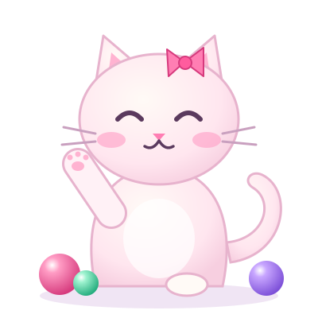

Положи основной шарик на другой основной — они сольются в новый цвет. Можно даже в полную пробирку.
Цель та же — в каждой пробирке один цвет. Не смешай лишнего: ошибку можно отменить кнопкой ↶.
Как зовут котика?